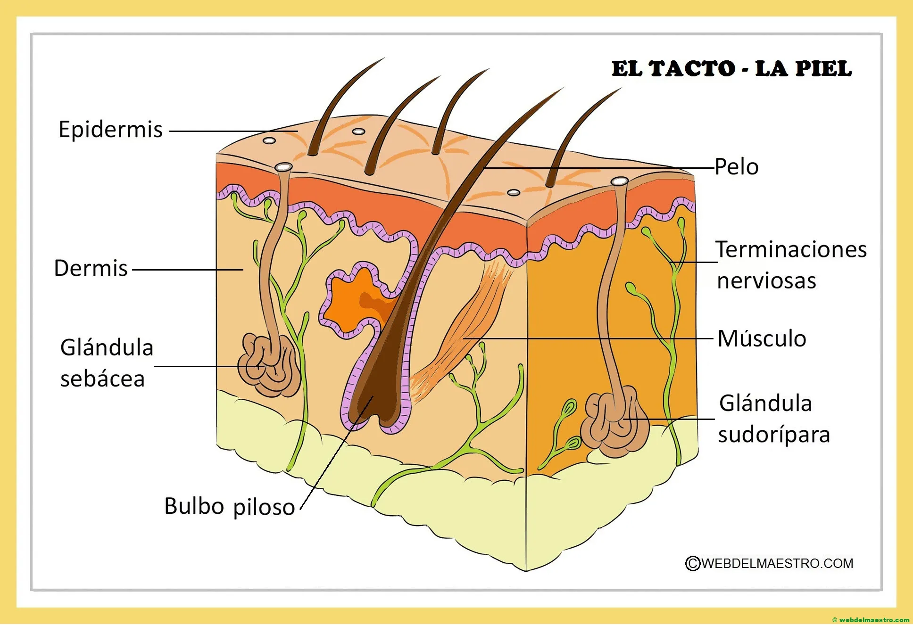

La vista nos permite percibir el mundo a través de los ojos, capturando la luz y transformándola en imágenes que el cerebro interpreta.
A través de la vista, podemos admirar la belleza de un paisaje, los colores de un atardecer y las expresiones faciales de las personas que amamos.
Los ojos funcionan como ventanas hacia el alma, reflejando nuestras emociones y conectándonos con los demás.
